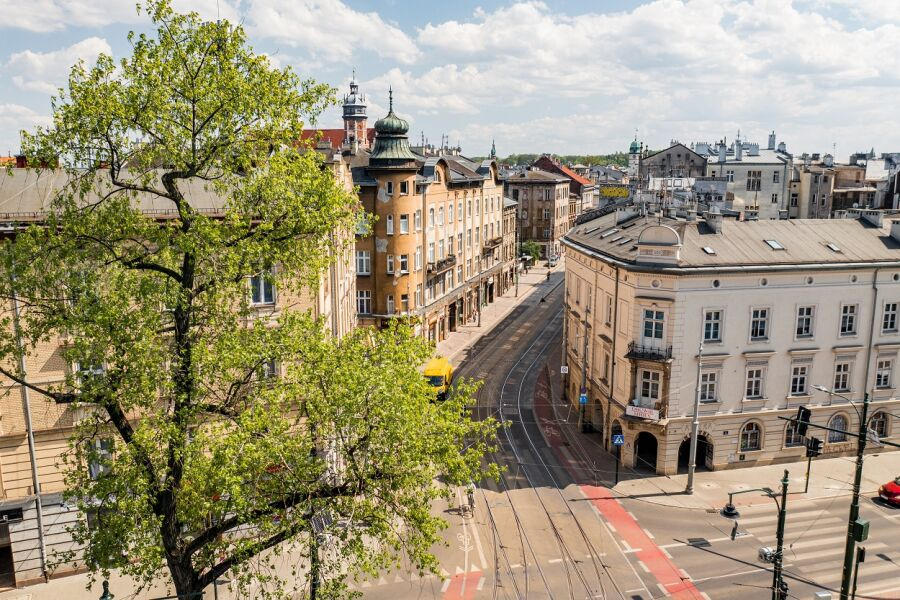
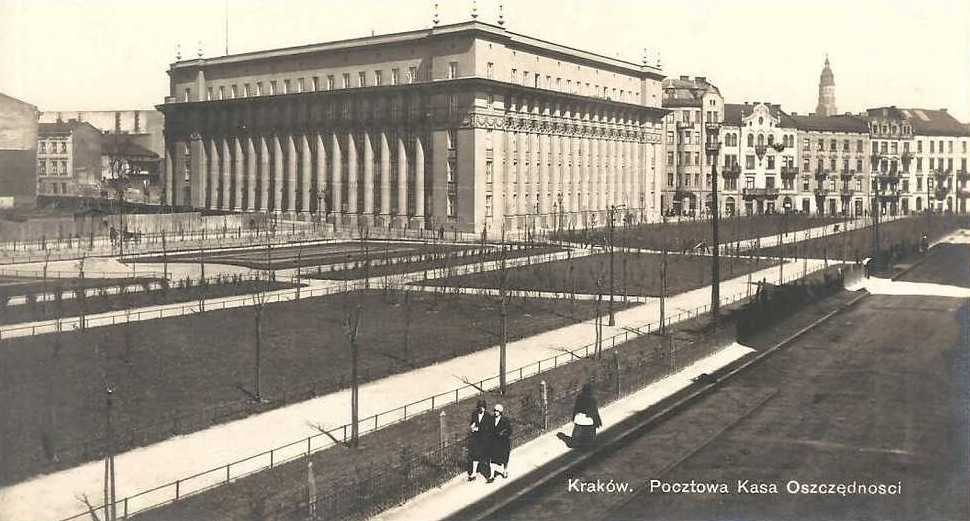

Atrakcije Krarow
Link do wikipedia Zapraszamy do obejzenia Planty dietlowskie powstały w miejsce zasypanego koryta Starej Wisły. Pomysłodawcą był prezydent miasta Józef Dietl, a projektantem B. Malecki. Budowa plant była częścią planu porządkowania i rozwoju urbanistycznego Krakowa. Ulica została wybudowana w latach 1878–1880 (aktualną nazwę otrzymała w 1879). Miała kilometr długości i 100 metrów szerokości, składała się z dwóch jezdni przedzielonych pasem zieleni o powierzchni 4,96 ha. Jej naturalnym przedłużeniem (wynikającym z przebiegu zasypanego koryta rzeki) była aleja Ignacego Daszyńskiego
Uica Dietla Krakow 2023
Lata 1918-1929 , Aleja Dietla, widoczne Planty Dietlowskie i gmach PKO.
Lata 1865-1870 , Wiadukt kolejowy nad Starą Wisłą w Krakowie jeszcze przed zasypaniem koryta.
Znane ludzie Krarow
- Agnieszka Radwańska ❤️
- Jan Matejko 😶🌫️🤓
Ceny Krakow
| Szkolenie | Ocena | Daty | |
|---|---|---|---|
| Java | 10/10 | 06.07.2020 | 08.08.2020 |
| Spring Zaawansowany | 11/10 :) | 12.12.2020 | 19.12.2020 |